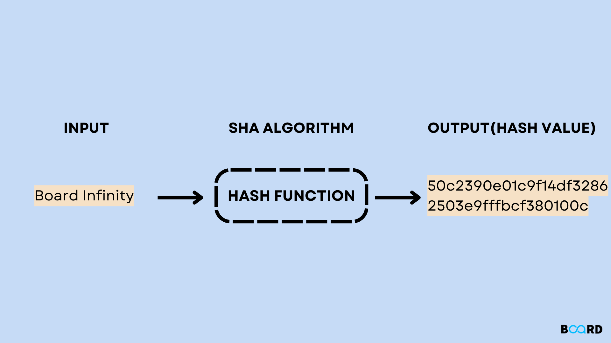

This SHA1 hash generator is useful for encoding passwords, credit cards numbers and other sensitive date into MySQL, Postgress or other databases. PHP programmers, ASP programmers and anyone developing on MySQL, SQL, Postgress or similar should find this online tool an especially handy resource.
What is the SHA1 Algorithm?
SHA-1 or Secure Hash Algorithm 1 is a cryptographic algorithm which takes an input and produces a 160-bit (20-byte) hash value. This hash value is known as a message digest. This message digest is usually then rendered as a hexadecimal number which is 40 digits long. It is a U.S. Federal Information Processing Standard and was designed by the United States National Security Agency. SHA-1 is now considered insecure since 2005. Major tech giants browsers like Microsoft, Google, Apple and Mozilla have stopped accepting SHA-1 SSL certificates by 2017.
Working of SHA1

Use Of MD5 Algorithm:
Cryptography : The main application of SHA1 is to protect communications from being intercepted by outside parties. From a given data input, SHA1 generates a fixed-size, singular, and irreversible hash value. The integrity of the data can then be confirmed by comparing this hash value to the original hash value. This makes it possible to confirm that the data was not changed or tampered with in any manner during transmission.
Data integrity :In many industries, such as finance, healthcare, and government, data integrity is a major concern. Data integrity in a system is checked using the SHA1 algorithm. A fingerprint of the original data is created using a hash value produced by the SHA1 algorithm. If the data changes in any way, the hash value will also change, indicating that the data has been tampered with.
Digital Signatures: : Digital signatures are used to confirm the legitimacy of digital documents and messages. The digital document or communication is hashed using the SHA1 technique, and its hash value is subsequently encrypted with the sender’s private key. Using the sender’s public key to decode the message, the recipient can then compare the hash value to the original value.
Digital Forensics : In digital forensics, a hash of a file containing digital evidence can be produced using the SHA1 algorithm. To ensure that the evidence hasn’t been altered with during the investigation, utilize this hash value as proof. It gives proof that the file has not been altered if the hash values of the original file and the evidence file match.
Password Storage : SHA1 can be used to save passwords. A hash of the password is generated using SHA1 when a user creates a password. The password itself is then substituted in a database for the hash value. The user’s password is hashed with SHA1 when they attempt to log in, and the resulting hash is compared to a previously generated hash.
Software Updates : Software Updates: The integrity of software updates can be guaranteed using SHA1. The SHA1 hash of the update file can be made public on the software vendor’s website when an update is made available. By comparing the hash of the downloaded file with the published hash, users can download the update and ensure its integrity.